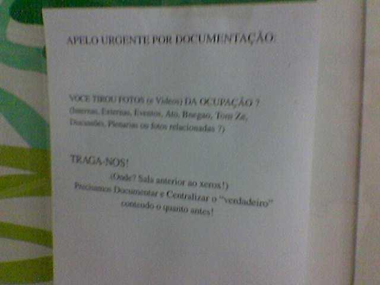

|
|  |
|
, este lugar deve ser um gelo à noite - se os ocupantes são ''juventude bem criada'', como dizem alguns jornais, isso só valoriza mais o esforço. Brrrr.")
| Um apelo por fotos e vídeos - manifesto aqui que todas as mídias que eu publico aqui estão disponíveis para uso, é só baixar (como visto em foto anterior, equipamento para isso tem de sobra na reitoria). Sugestão: não coloquem aspas na palavra ''verdadeiro'', pois elas denotam citação (como é o caso aqui) ou ironia - e não preciso dizer como pega mal o segundo caso neste contexto. | |
| « | < | 21 | 22 | 23 | 24 | 25 | 26 | 27 | 28 | 29 | 30 | 31 | 32 | 33 | 34 | 35 | 36 | 37 | 38 | 39 | 40 | > | » | |
| Total images: 44 | Last update: 05-06-2007 5:16 | Gerado por JAlbum 7.1 & Chameleon | Help | |